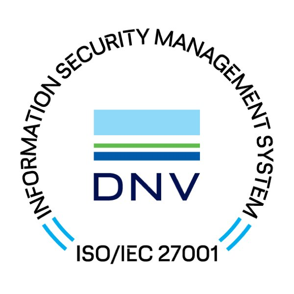

정보보호 인증

카카오는 기술적, 관리적, 물리적, 조직적인 정보보호 대책을 다양하게 구현하고 있습니다. 전문 국가기관으로부터 개인정보 및 정보보호 체계 수준을 검증받는 등 꾸준히 내부 시스템을 점검, 관리, 운영하고 있습니다.
- 정보보호 및 개인정보 관리체계 인증 (ISMS-P)
-
[인증범위] 인터넷 서비스 운영(카카오, 다음, 멜론)
[유효기간] 2019.12.26 ~ 2022.12.25

- ISO/IEC 27001, 27701, 27017
-
ISO/IEC 27001은 국제표준화기구 ISO 및 국제전기기술위원회(IEC)가 제정하고 관리하는 정보보호 관리체계에 대한 국제규격 인증입니다.
카카오는 메일, 카카오톡, 광고, 검색 등 전사 서비스를 대상으로 인증을 유지하고 있습니다. 또한 카카오는 고객 여러분의 소중한 개인정보보호를
위해 개인정보 관리체계 국제규격인 ISO 27701과 클라우드 서비스의 정보보호를 위한 국제규격인 ISO 27017을 취득하였습니다.
[유효기간] 2021.07.07. ~ 2024.07.06.